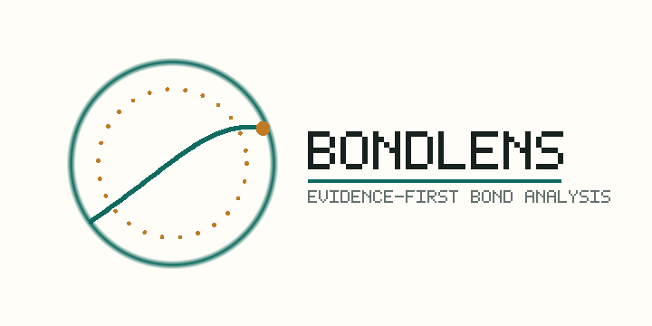

Agent core
Single path: Planner → Tools → Evidence → Report. Not a multi-role equity desk.
Evidence-first · Chinese bonds
An Evidence-First Bond Analysis Agent for Chinese Market Data

BondLens turns a natural-language bond question into an auditable run: live/snapshot/static data, deterministic tools, optional LLM narration under numeric/language guardrails, and a reviewer-facing Trust Layer.
Not a multi-agent equity research desktop. A claim-level evidence agent for Chinese bonds.
数字由代码计算，叙述可由大模型辅助，每次输出都可追溯。 不是让 LLM 自由猜金融结论，而是工具先出证据，Agent 再编排、解释、裁决与诚实回退。
Open in browser — no server required. Same idea as FinRobot-style example reports, scoped to Chinese bonds.
Single path: Planner → Tools → Evidence → Report. Not a multi-role equity desk.
search / describe / rank / outliers / peer / monitor / bond report — numbers never invented by the model.
Guardrail · judge · Trust score · Evidence Pack · replay · pytest ~110 · agent 10/10 · red-team 3/3.
BondLens keeps the financial reasoning path visible and auditable.
Planner, tool routing, evidence ledger, deterministic fallback, OpenAI-compatible local LLM path.
Honest live/snapshot/static lineage; no fake ratings, credit events, or trade instructions.
Blocks unsupported numbers, investment-advice language, guarantees; CI agent + red-team suites.
{kind=link}